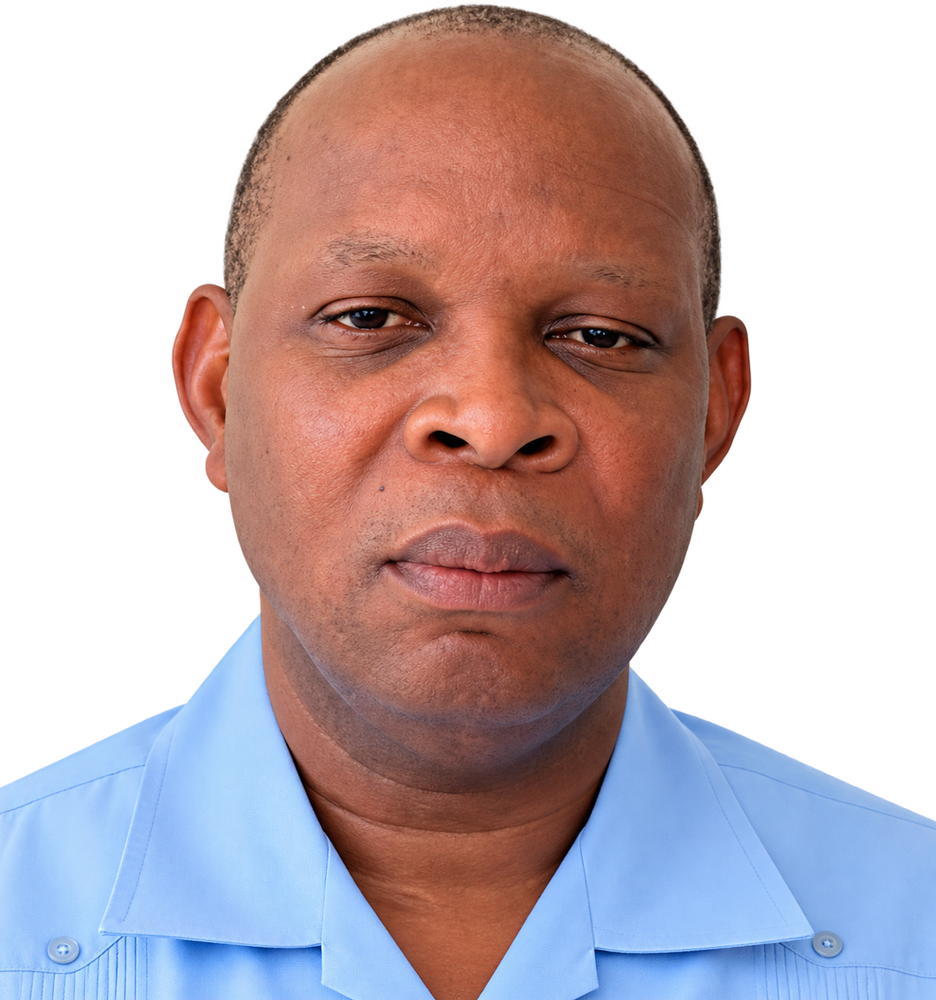

Mot du Directeur Exécutif
Indépendance, professionnalisme et dévouement.
Une parole institutionnelle sur l'engagement et la responsabilité de SKL.

Rév. Père Gardy Maisonneuve
Mot du Directeur Exécutif
Indépendance, professionnalisme et dévouement.
Depuis sa création, SANT KARL LÉVÊQUE s'engage dans la promotion, la protection et la défense des droits humains en Haïti.
Rév. Père Gardy Maisonneuve
Directeur Exécutif